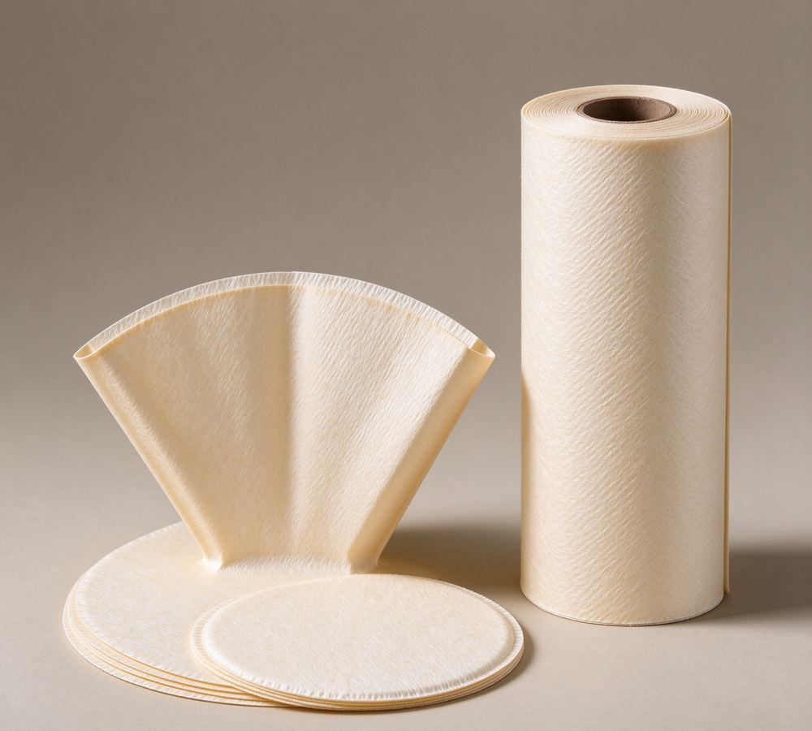

Home/Products/Coffee Filter Paper

Bleached and natural coffee filter paper — parent rolls, sheets, discs and pleated blanks, with food-contact documentation.
Coffee filter paper lives between two demanding machines: the packing line that forms the bag and the brewer that extracts the cup. The paper must be strong enough wet to run through forming and sealing without tearing, yet open enough to let water pass at the rate your format needs — and it must do this identically on every shipment.
We supply bleached and unbleached grades from mills experienced in food-contact export orders, as parent rolls for converters or as finished sheets, discs and pleated blanks. Declarations of compliance and, where applicable, accredited-lab test reports accompany the shipment — see our buying guide for the full checklist we recommend before any food-contact order.
Typical industry values — the exact specification for your order is confirmed in the quotation.
| Format | Typical Area Weight | Key Property | Typical Use |
|---|---|---|---|
| Drip paper (bleached / natural) | 60–90 g/m² | Fast flow, high wet strength | Flat and pleated drip bags |
| Filter discs | 60–90 g/m² | Die-cut to your diameter | Pods, pads, commercial brewing |
| Parent roll | 60–100 g/m² | Slit to converter width | Packing lines and converters |
Typical values — the written specification (weight, burst, permeability ranges) is agreed before production.
Compliance, wet strength and flow — what to confirm first.
Read more →Send dimensions, duty conditions and quantity — quoted within 24 hours on working days.